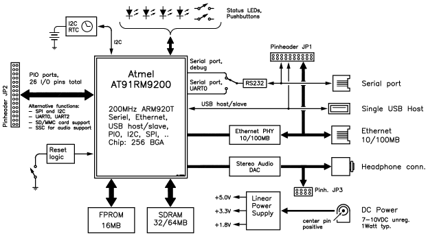
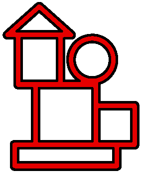

An ARM-based LIAB computer- An embedded LIAB computer used as web server |
1. Introduction
LIAB ApS has developed an ARM-based Linux computer, a "LIAB", with built-in Ethernet and power-supply, all on a small Printed Circuit Board (PCB). The LIAB does not have a keyboard or a monitor, and in it's basic configuration no hard drive. The operating system and applications are saved in FLASH PROM which is the part of the memory that is not lost when power is disconnected. To get the LIAB running, one only needs any standard unregulated DC power-supply, capable of supplying anything from 5.5 to 15 volts. The physical dimensions of the LIAB are small, it has low power consumption, about 1 Watt, and contains no mechanical wearing parts. This makes the LIAB well suited for performing control and data logging tasks, controlled via the Internet.
Early in the development phase the Open Source operating system Linux was chosen. This is partly due to the fact that Linux has a stability and flexibility that other operating systems appear to be missing, and partly because a fully functional Linux system, including an Apache web server, only takes up 4 MB in compressed form. Since the LIAB is fitted with 16 MB of FLASH PROM this leaves ample space for a number of web pages and application programs.
Contents:
- 1. Introduction
- 2. The LIAB Hardware
- 3. The LIAB Software
Mikael Dich, november 2006
Shown in Figure 2 are the parts that make up the LIAB. The core of the LIAB is the ARM-based AT91RM9200 microprocessor from Atmel. This contains the essential parts of a Linux computer: ARM920 CPU with MMU and cache, interrupt system, timers, serial ports, USB, and Ethernet. Furthermore it contains a large number digital I/O ports. When the LIAB is used for control tasks these will normally be used, since they are simple to control and read from an application program, developed under Linux. To simplify the connection of extensions, all peripherals and I/O ports can be accessed via the three pin connectors. Furthermore the LIAB contains the following parts: 
Figure 2: The parts of the ARM-based LIAB.
All these parts are placed on a Printed Circuit Board (PCB) witch measures a mere 65x60 mm2 (app. 2.5x2.3 sq. inches) and weight about 40 grams (app. 1.5 ounces).
- 16 MB of FLASH PROM: This memory type has the property that the contents are not deleted when the power is disconnected. Here the entire Linux system is kept in a compressed form. A part of the FLASH PROM is used as a FLASH file system, which in terms means a file system that can be accessed as a regular hard drive, where information is not lost during power failure.
- 32 or 64 MB of dynamic RAM: Standard SDRAM is used as working memory for the Linux system.
- A 10/100 Mbit Ethernet interface: The ARM-based LIAB can be connected to the Internet through this.
- USB interfaces with one USB hosts.
- An I2C-bus Real-time Clock. Furthermore the I2C-bus can be used to access I2C units outside the LIAB computer.
- An operator Interface with 4 LED's, and two push buttons. All these parts can be accessed from a Linux application program.
- Power-supply: The design contains a linear power-supply which feeds all parts of the electronics. This means that the LIAB can operate from an unregulated DC with large voltage variations.
To ease the task of programming the LIAB, it has been chosen to use a well known operating system. In this way a multitude of facilities, such as debuggers, file systems and network are readily available. Furthermore the platform is based on a system which is tested by many users. Unfortunately, source code for operating systems is often proprietary and not available. The closer to the hardware you want to code, the greater the problem with the unavailable source code becomes. This is why the development phase of the LIAB focused on the possibility of using the open source operating system Linux. Developing applications for the LIAB does not differ significantly from developing it for a regular PC.
Both the Linux operating system and the applications for controlling a digital camera are preprogrammed into the LIAB FLASH PROM. When power is connected to the setup. a bootloader will perform the basic configuration of the hardware and then extract the compressed Linux kernel. When this is completed, the Linux kernel takes control and performs additional configuration of the hardware together with an initialization of the operating system. On a normal PC the next task would be to access the hard drive to access the command files and applications needed for the further operation of the Linux system. Since the LIAB doesn't contain a hard drive, it uses a part of the memory. To the Linux system, this memory will look like any other hard drive and it is also called a ram-disk system. The ram-disk, however, is kept in the volatile part of the LIAB memory, i.e. it will be deleted when power is disconnected. This is why essential files and applications are kept in a FLASH file system (JFFS2). During boot-up the Linux system will copy relevant files from here to the ram-disk system.
It is worth noting that the Linux system on the LIAB in almost every area offers the same services as a Linux system on an ordinary PC. This means that several users can log on to a LIAB over a network with, e.g. telnet or ssh. The LIAB will prompt for userid and password, and in case the user succeeds in logging in, the system will offer the most common Linux/Unix-commands such as ls, chmod, cat, date, ps, etc. The working system also contains the text editor vi together with a number of network services such as ftp and nfs.

Mikael Dich, november 2006